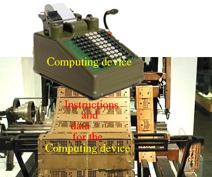
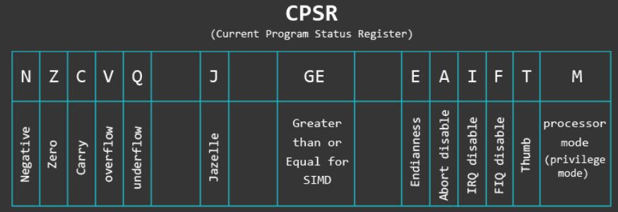
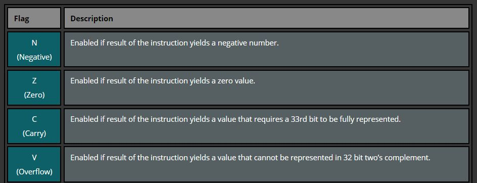
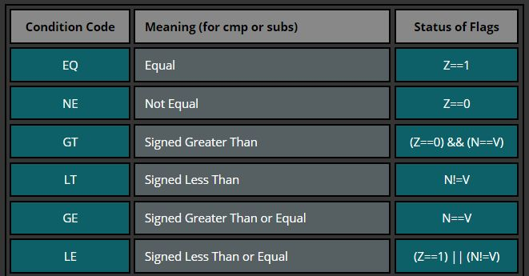

- The special purpose registers are
used exclusively for:
- Implementation (= make it happen)
of the function of the
CPU
I.e.: the special purpose registers are part of the machinary that enable the CPU to perform:
- Fetch the next instruction from memory (into the CPU for execution)
- Execute the (fetched) instruction
- Implementation (= make it happen)
of the function of the
CPU
- I trust that you are familiar with a
mechanical piano where a
sheet of paper with hole
are fed into the
mechinical piano:

Each row of holes in the paper will cause the mechanical piano to hit a specific set of keys (= notes)
- I like to compare a
computer with
this imaginary
(made it up myself) mechanical calculator:
 In the mechanized calculator analogy:
- A row of hole =
an instruction for the
calculator
- An instruction will
tell the mechanized calculator to
perform a
specific computation
(E.g.: add 56, subtract 78, etc.)
- An instruction will
tell the mechanized calculator to
perform a
specific computation
- The mechanized calculator will get the next instruction on its own and perform the fetched instructions one at a time.
- A row of hole =
an instruction for the
calculator
- Explaining the operation of a computer using the mechanized
calculator analogy:
- A computer
is an electrical device,
and I only use the
mechanized calculator analogy to
make the operation of
a computer
easier to understand because:
- The computer has
a memory
that stores the instructions
and the data
(that's the sheet of paper with holes)
- The computer has a CPU that performs the computations encoded in the instructions (that's the calculator on top of the sheet of paper)
- The computer has
a memory
that stores the instructions
and the data
(that's the sheet of paper with holes)
- Operation of a
CPU:
- The CPU will repeatedly get the next instruction (from memory) and perform the computation encoded in the instruction.
- A computer
is an electrical device,
and I only use the
mechanized calculator analogy to
make the operation of
a computer
easier to understand because:
Slideshow:

- Maybe some of you have not had this information presented (taught) in
CS170/CS171, so I will
teach (= write) it here to give you the
context to
understand the
operation of the
CPU:
- A computer program consists
of computer instructions and is
stored in memory:
- When the computer program is
run (= executed), then:
- The CPU
fetches the
(computer) instructions in
the program
-- one instruction at a time,
starting at address 0 - and
execute the
(fetched) instruction
- When the CPU finishes executing an instruction, the CPU will fetch the next instruction and execute it.
- The CPU
fetches the
(computer) instructions in
the program
-- one instruction at a time,
starting at address 0 - and
execute the
(fetched) instruction
- The current instruction:
- Current instruction = the instruction (in memory) that the CPU is currently executing
The next instruction:
- Next instruction = the instruction (in memory) that the CPU will execute after it finishes executing the current instruction
- The program instructions
is executed in
a specific order
- The order in which the
program instructions are
executed is called:
- The flow of the
program
(Or program flow)
- The flow of the
program
There are 2 types of program flows:- In-order program flow (or normal program flow
- Out-of-order program flow
The conditional statements (if, if-else statements) and loop statements (while, for statements) will cause out-of-order program flow in a program execution
- The order in which the
program instructions are
executed is called:
-
The in-order or
normal program flow is when:
- After executing the current instruction in the program, the CPU fetches and executes the instruction that physically follows the current instruction in the program
The normal program flow depicted in a diagram:
-
An
out-of-order program flow is when:
- After executing an instruction in the program, the CPU fetches and executes a instruction that is not the physically next instruction in the program
The out-of-order program flow depicted in a diagram:
Comment:
- The next executed instruction
can also
be located before th
currently executing instrucion !!!
- When an our-of-order program flow
occurs, we say that:
- The program has made a jump (or branch) (because it did not "continue on" with the next instruction that follows the current instruction)
The special purpose registers allows the CPU to perform its designed function which is:
- Fetch the next instruction according to the program control flow from memory into the CPU
- Execute the (fetched) instruction
We will now discuss the usage of the 3 special purpose registers
- A computer program consists
of computer instructions and is
stored in memory:
- Instruction Register:
- The Instruction Register contains
the instruction that is
currently being executed by
the CPU:
The IR register contains the binary code of the current instruction that the CPU is executing
The circuitry inside the CPU will emit control signals to various parts of the CPU to instruct the components (such as registers, ALU, etc) to cooperate to achieve the result (= action) encoded by the current instruction
If you want to know what circuitries are used and how the different components coorporate to execute a computing instruction, you will have to take CS355.
- The Instruction Register contains
the instruction that is
currently being executed by
the CPU:
- Program Counter:
- The Program Counter (register) contains the address (= location) of the next instruction that the processor will fetch and execute (after the processor finish executing the instruction in the Instruction Register)
- Processor Status Register:
- The Processor Status Register
(as the name says) contains
the status of the
processor:
- When the processor executes an instruction, the status of the execution may be recorded in the PSR
The PSR register contains a (large) number bits (typically 32)
The value of each bit represents a certain execution condition
Example:
- The PSR register
in the ARM processor
(called the
"Current Program Status Register") contain the
follown fields:
 (The diagram above is taken from this website: https://azeria-labs.com/arm-data-types-and-registers-part-2/ )
- The Processor Status Register
(as the name says) contains
the status of the
processor:
- For CS255
(where we use assembler programming to
understand
constructs in
High Level Programming Languages), we
only use the following
computation status "flags" (= bits)
in the PSR register:
 Explanation:
- N = 1 when the
execution of the
previous instruction resulted in
a negative value
(i.e., the left-most bit = 1
N = 0 otherwise.
- Z = 1 when the
execution of the
previous instruction resulted in
the value zero (= 0)
(i.e., all bits are
equal to 0
Z = 0 otherwise.
- C = 1 when the
execution of the
previous instruction produced a
carry in the
33th bit position
C = 0 otherwise.
- V = 1 when the
execution of the
previous instruction produced a
value that
cannot be
represented with
32 bits
(i.e.: value is too large, or overflow)
V = 0 otherwise.
- N = 1 when the
execution of the
previous instruction resulted in
a negative value
(i.e., the left-most bit = 1
- These N,Z,V,C flags are called:
- Condition flags
because together, their values can be used to check for the comparison outcome of 2 values.
- When you want to
compare the value x and y,
you can subtract the
values
(x - y)
and
check the
condition flags to
find out which value is
large.
Example:
Compare: x = 4 and y = 5 4 - 5 -------- -1The outcome of the subtraction contains information about whether:
x == y (result = 0 !) x != y (result != 0 ) x < y (result is a negative number !) x > y (result is a positive number !) x <= y (result = 0 or a negative number) x >= y (result = 0 or a psotive number)You can check the setting of the flags to find out which condition is true.
Here is a table of what flag setting to look for:
 Source: https://azeria-labs.com/arm-data-types-and-registers-part-2/
Comment:
- You do not need to
remember the
flag settings
I will show you how to test for a given condition using easy to remember assembler instructions later
- You do not need to
remember the
flag settings